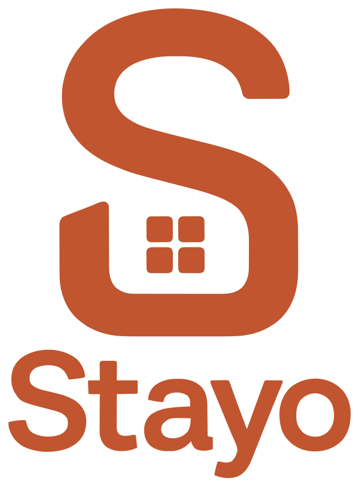
One "S" holding a home and a window — S for Stayo, a door for every stay, four panes for rooms & units. Three colourways for any surface.
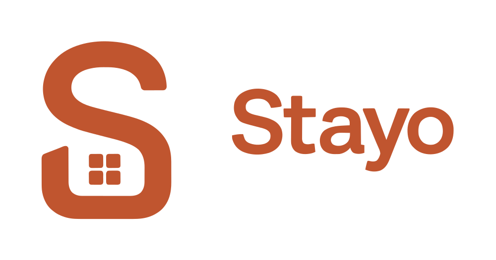
Warm, earthy, hospitable. Tokens ship as CSS variables, JSON and TXT in /color.
Manrope leads, Inter reads.
The mark alone, on brand surfaces. Exported at 1024 / 512 / 192 plus a full favicon set.
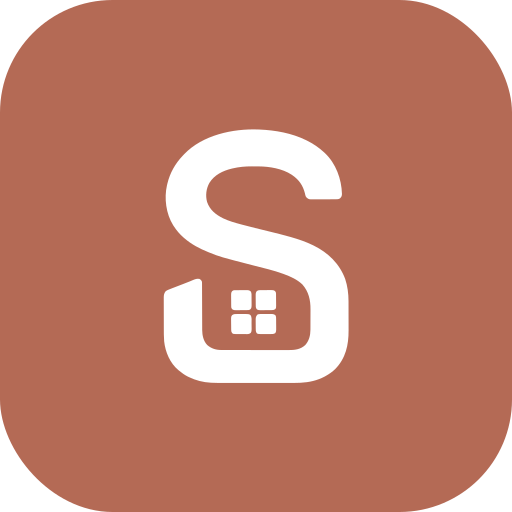
Exact platform sizes — no cropping on upload.
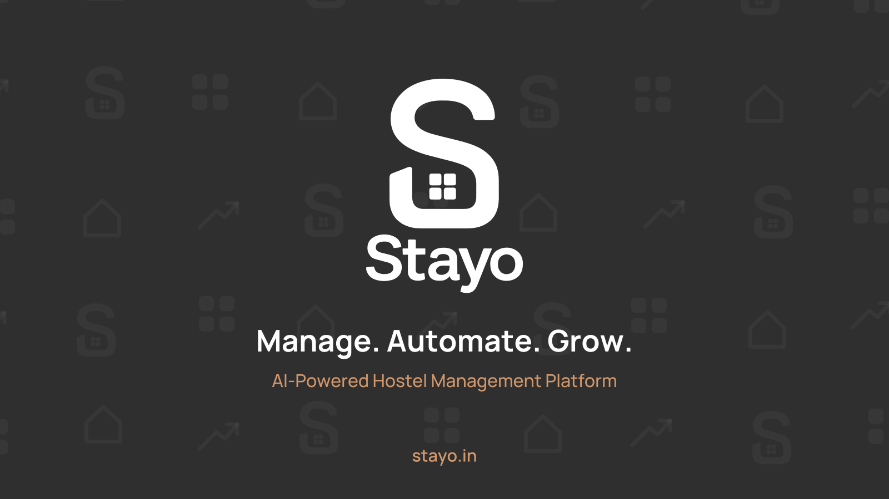
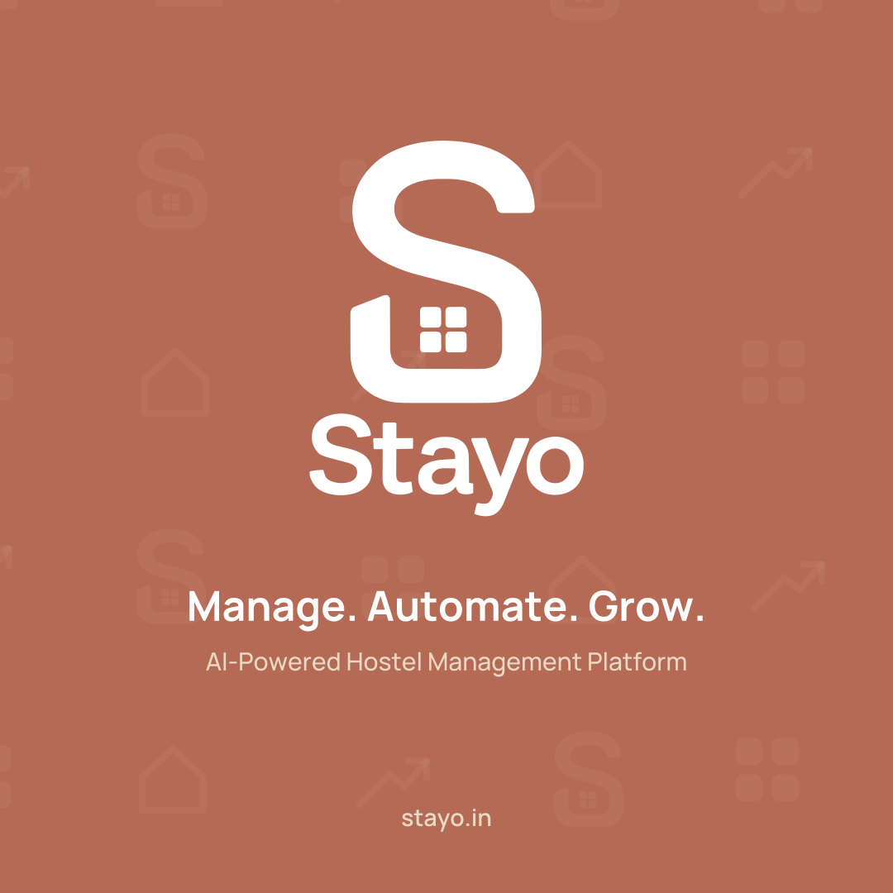
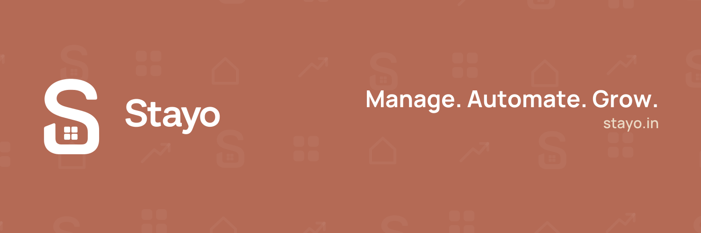
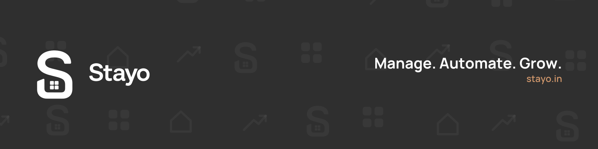
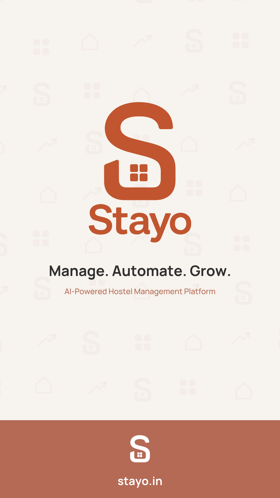
The motif set — S, window, house, growth — as a soft, repeatable background.
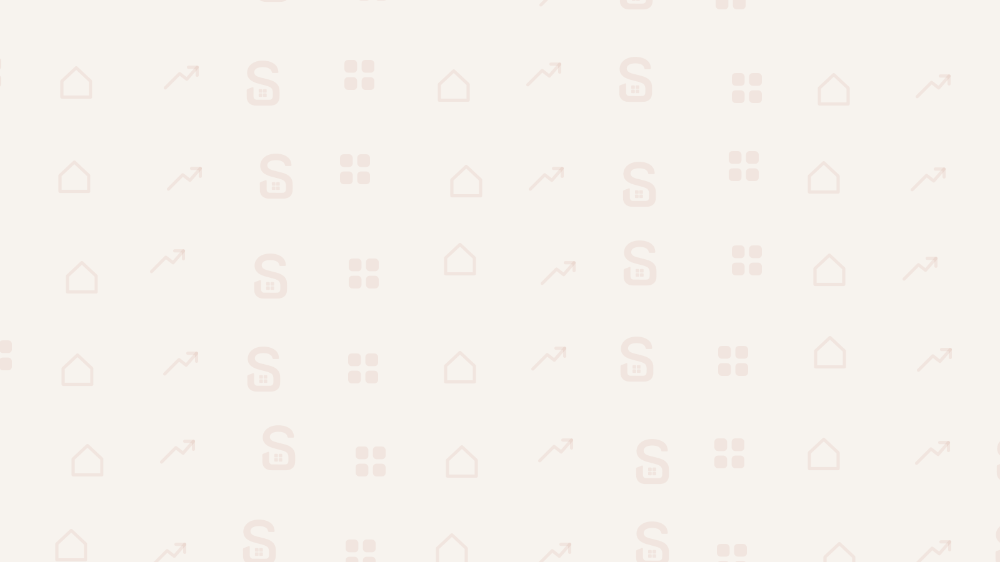
Die-cut set for swag, packaging and community drops.
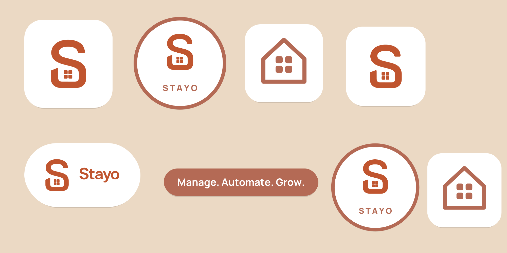
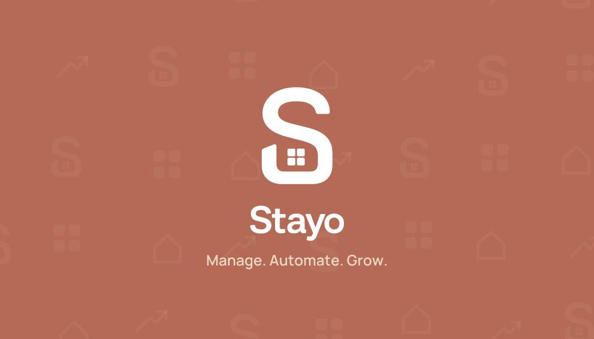
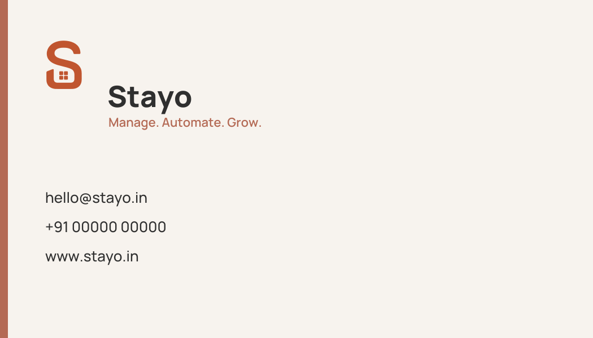
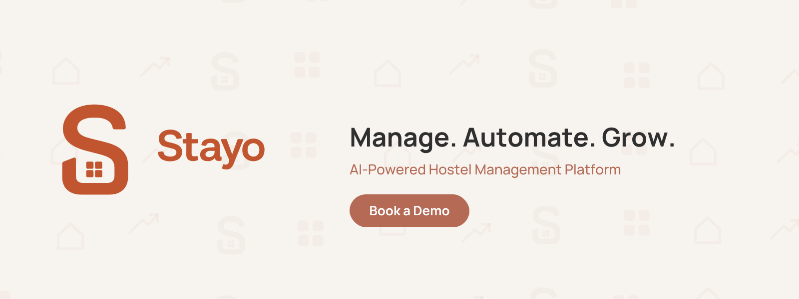